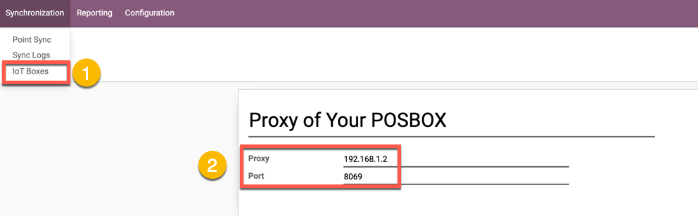
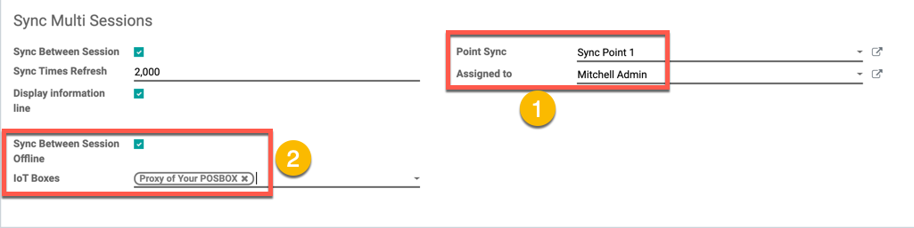
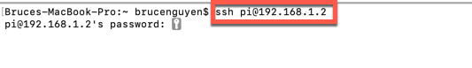
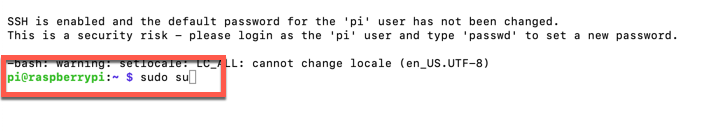
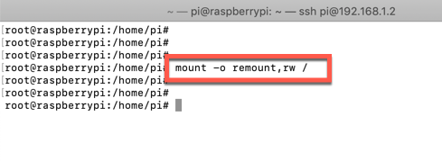

Your shop will have multi devices and have multi browse use a POS Odoo, and they'll syncing the same ONE SCREEN POS
Supported work on : Chrome, Firefox, Safari
There is automatically orders Shop by Shop( one shop can syncing between , and You can have multi shop )
When your network system have problem (eg: lose the internet), Syncing between clients not work, but Network Up, all transaction automatic syncing again
All screen of sessions (POS Screen) the same orders, total amount, order lines ...
When new client open the session of POS screen, this client always have order the same client other ordered before
When client close browse or turn off the devices (computes), and re-open again, the orders have ordered before will come back (Restore)
Support Shop and Restaurant both
Support online mode with your odoo (Your odoo server become point sync)
Support offline viva one POSBOX, worked inside your local Lan Network
Setup Your POSBOX
Add Your POSBOX proxy

Go to POS Config and active sync and sync offline, made sure all session config the same Point Sync

Sync Online with Odoo Server, Required your odoo hosting on http (non-ssl)
Dont check to Sync Between Session Offline for all sessions config
Sync Offline with Odoo Server, without Internet
Offline mode can sync between sessions with your Local Lan Network
Required have one PosBox, IoT box
Go to POS Config and active sync and sync offline, made sure all session config the same Point Sync
Config POSBOX
First required install 1 posbox version 17 with image download from: https://nightly.odoo.com/master/posbox/posbox_image_v17.zip
Open your terminal console and login to your posbox with password: user: pi and password: raspberry
$ ssh pi@[your posbox proxy] [enter] [input: password pi is raspberry]

Change mode to root user
$ sudo su

Mount sd card of poxbox disk image, required mount for posbox allow you copy, replace files on sd card posbox
$ mount -o remount,rw /

Unzip module pos_bus have bought from Apps Store Odoo, open pos_bus. You will see hw_screen/controller, open it and copy controller and replace folder hw_screen/controller of POSBOX